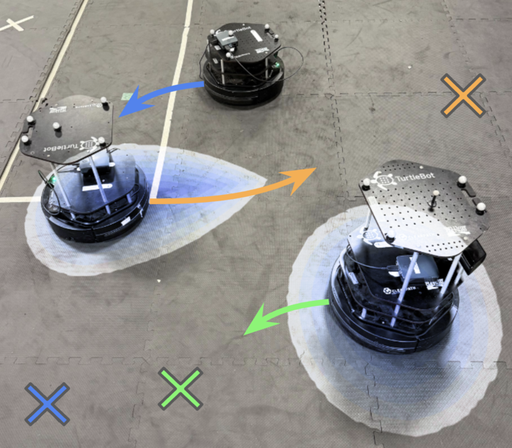

|
Hyun Joe Jeong I am a first year Robotics Institute PhD student at Carnegie Mellon University, advised by Andrea Bajcsy. Previously, I graduated from UC San Diego, where I was advised by Sylvia Herbert. I have also collaborated with Somil Bansal. I am fortunate to be a NSF GRFP Fellow. |

|
ResearchI focus on embodied AI alignment and safety, leveraging tools and concepts from generative modeling, imitation learning, amd reinforcement learning. Specifically, I aim to develop methodologies that efficiently steer large models during execution time by exploiting their internal mathematical structures. Representative papers are highlighted. |
|  |
Reachability Barrier Networks: Learning Hamilton-Jacobi Solutions for Smooth and Flexible Control Barrier Functions
Matthew Kim, William Sharpless, Hyun Joe Jeong, Sander Tonkens, Somil Bansal, Sylvia Herbert CoRL Workshop on Safe and Robust Robot Learning for Operation in the Real World, 2025 arXiv We demonstrate that RBNs are highly accurate in low dimensions, and safer than the standard neural CBF approach in high dimensions. |
|
Robots that Suggest Safe Alternatives
Hyun Joe Jeong, Rosy Chen, Andrea Bajcsy IROS, 2025 project page / arXiv We enable robots to know when they can confidently execute a user's desired goal, and automatically suggest safe alternatives when they cannot. |
|
|
Parameterized Fast and Safe Tracking (FaSTrack) using DeepReach
Hyun Joe Jeong, Zheng Gong, Somil Bansal, Sylvia Herbert L4DC, 2024 arXiv Parameterized Fast and Safe Tracking can smoothly trade off between the navigation speed and the tracking error (therefore maneuverability) while guaranteeing obstacle avoidance in a priori unknown environments. |
|
|
Synthesizing Control Lyapunov-Value Functions for High-Dimensional Systems Using System Decomposition and Admissible Control Sets
Zheng Gong, Hyun Joe Jeong, Sylvia Herbert CDC, 2024 arXiv we propose a method to decompose systems of a particular coupled nonlinear structure, in order to solve for the CLVF in each low-dimensional subsystem. We then reconstruct the full-dimensional CLVF and provide sufficient conditions for when this reconstruction is exact. |
|
Template adapted from here. |